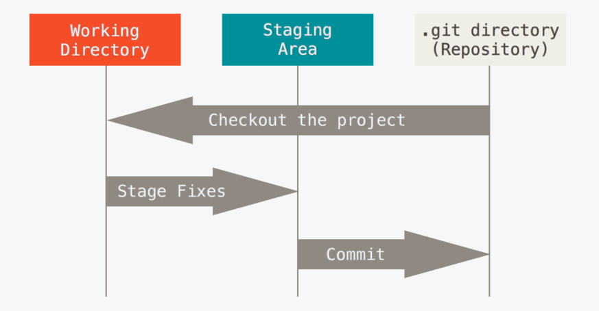

Un elemento vacío es un elemento de HTML, SVG, o MathML que no puede tener nodos secundarios (es decir, elementos anidados o nodos de texto).
Las especificaciones HTML, SVG, y MathML definen con precisión lo que cada elemento puede contener. Muchas combinaciones no tienen sentido semántico, por ejemplo un elemento
Esto es un
parrafo con un salto de linea.
Dentro de los elementos vacios entran las imagenes ya que no poseen nodo de cierre, por ejemplo: Flujo de trabajo de GIT
Los elementos vacíos en HTML son los siguientes:
<area><base><br><col><embed><hr><img><input><keygen>(HTML 5.2 Draft removed)<link><meta><param><source><track><wbr>